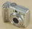
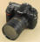
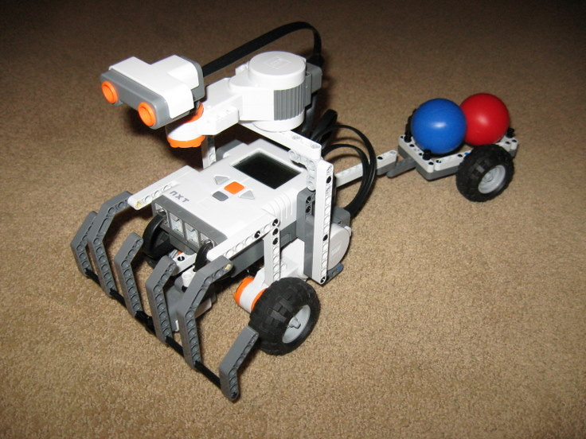
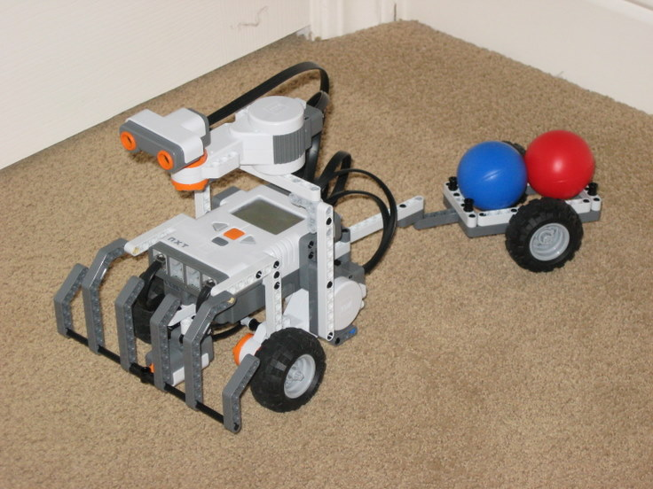
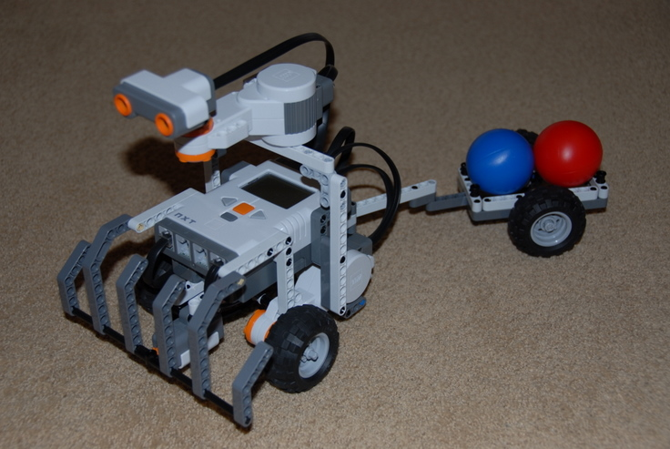
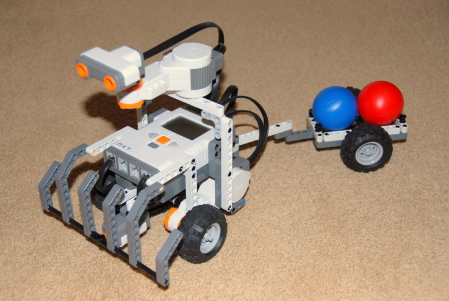
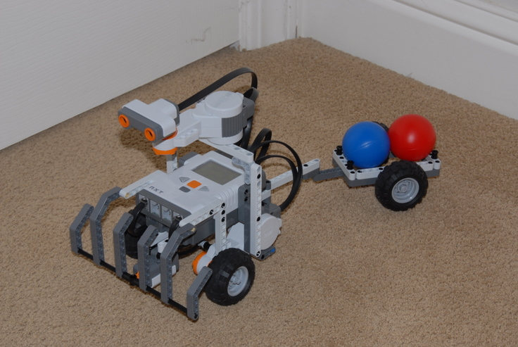
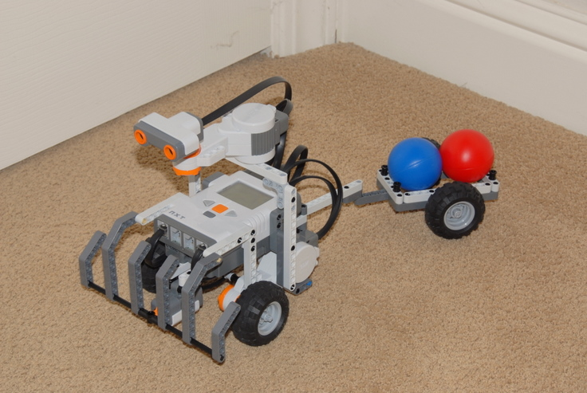

Fun Projects for your LEGO� MINDSTORMS� NXT!
|
|
Fun Projects for your LEGO� MINDSTORMS� NXT! |
Three Stages to Better Photos of LEGO Creations
| In stage 1, we use fixes that require only
changes to your camera settings or simple adjustments in a digital photo
editing program on your computer. |
|
Digital pictures that are a little too dark or have bad "white balance" (look overall too yellow or too blue) can be easily adjusted in a digital photo editing program. I use Google's Picasa, which is free and easy to use. There are lots of other choices. Here are the controls in Picasa that you can use to adjust a photo in seconds:
Not all lighting problems can be fixed with digital editing, though. In particular, a picture that is too light (overexposed) is hard or impossible to fix without losing details, pictures that are way too dark will look washed out or grainy when adjusted, and some white balance problems cannot be fixed with the controls shown above. If you cannot get a good enough result with some simple adjustments, you should re-take the picture with different lighting or different camera settings. An example of these adjustments used successfully is shown below.
|
|   | Stage 1 Fixes for all Cameras |
The first Stage 1 Fix for camera settings, which applies to all kinds of cameras, is the same as the Quick and Easy Fix, which will I explain here in more detail, to help explain what causes the typical problems that we start with. If you simply turn
on a point & shoot camera in full automatic mode, hold it up to your robot until the
robot fills the frame and press the picture button, the result is
something like this: |
|
 Canon A570 in full automatic mode (with flash), no zoom (wide angle) |
|
 Canon A570 in full automatic mode (with flash), at 4x zoom |
|
For an SLR camera with a zoom lens marked in mm (focal length in millimeters), use something around 70mm. Close-UpsIf you want a close-up of part of the robot, instead of getting closer or zooming in even more, try staying at about 3 feet away then crop down the result afterwards in a digital photo editing program. You will have plenty of pixels to work with (even the full-sized pictures on nxtprograms.com are all downsized to less than 1/2 of a Megapixel, and all the close-ups are done by cropping), so feel free to crop away. If the result is too fuzzy or grainy due to lack of sharpness in the image, then you need to look at the improvements in Stage 2. Using Walls to Reflect the FlashThe improved photo above also shows using a second simple trick to get better flash photos. Putting the robot in the corner of a room near two white walls and taking the picture diagonally into the corner will allow the flash light to bounce off of the walls and help light up the sides and the back of the robot. |
| Additional Stage 1 Fixes for SLR Cameras |
The Nikon D200 in full automatic mode, with the built-in flash, held at a natural distance from the robot (about 2 feet away) produces the following result: |
| 
Nikon D200 in full automatic mode, with built-in flash,
zoom lens at 36mm |
This photo has two main problems:
The results
of adjusting just the lighting of the above photo in a digital photo
editing program produces the following: |
|

Nikon D200 in full automatic mode, with built-in flash,
zoom lens at 36mm |
The lighting is much improved, but the focus problem is not. That will require using different camera settings, which is what we will work on next. Increasing the Depth of Field by Setting the f-StopThe term depth of field refers to how much of the photo is in focus, and it is directly related to the f-stop (how far the lens aperture is open) used. Sometimes a narrow depth of field (only parts of the photo in focus) is used for artistic effect, but for pictures of LEGO creations, you will usually want a wide depth of field to get the whole model in focus. This requires using a manual or semi-automatic (e.g. "Aperture Priority") mode that allows you to set the f-stop. To increase the depth of field, you want to increase the f-stop number (which results in a smaller lens opening). A smaller lens opening results in less light reaching the camera's sensor, though, so how far you will be able to go depends on how strong your flash is and how well lit the room is to start with. If you go too far, the picture will come out too dark, or too grainy if the camera boosts the sensor's sensitivity too far to compensate. The built-in flash on the Nikon D200 is strong enough to take a good picture in this situation with the f-stop increased all the way to f/16, which results in sharp focus across the whole model. Some cameras will not be able to go this far on the f-stop without the result being too dark or grainy. Try starting at f/8 and working your way up to find the best setting. Using f/16 and also
applying the other general Stage 1 fixes of stepping back and zooming
in, and using walls to reflect the flash results in the following photo: |
|

Nikon D200 in Aperture Priority mode with f-stop set to
f/16, built-in flash, zoom lens at 70mm |
Adjusting this picture in Picasa to brighten it up and remove the slight bluish tinge results in the following: |
|

Nikon D200 in Aperture Priority mode with f-stop set to
f/16, built-in flash, zoom lens at 70mm |
Now both the lighting and the focus problems are fixed, and the picture is now quite good. However, the sharpness (ability to see small details, especially when cropped down to a close-up of a small area) and overall lighting can be further improved, as shown in Stage 2 and Stage 3. |
|
|
||||
| Step back about 3 feet and zoom in | |||||
| Put the robot in a corner of a room and use white walls to reflect the flash | |||||
| Use Full Automatic mode (with flash) | Use Aperture Priority mode (with
flash), and set the f-stop to f/8 or higher |
||||
|
Crop picture afterwards to get close-ups instead of getting closer or zooming in more |
|||||
|
Use digital photo editing software to adjust the lighting afterwards if necessary |
|||||
|
|
{kind=link}
{kind=link}
{kind=link}
{kind=link}
{kind=link}
{kind=link}